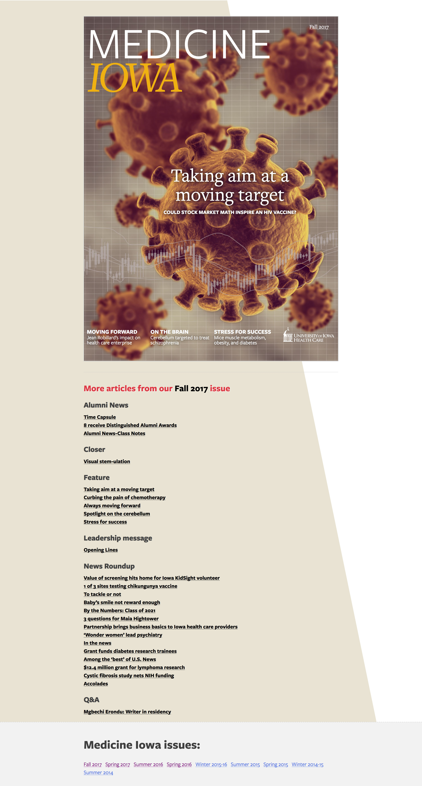

Medicine Iowa is the science and research magazine published by UI Health Care.
A redesign of the location page template with a focus on the user experience.
Redesigning the template to allow for more personalization and customization for each Medical Service.
Design proposal for the page providing news about the new UI Children's Hospital building.
Personal portfolio for my photography work.

Medicine Iowa is the science and research magazine aimed at physicians, other health-care professionals, researchers, and educators, with news and feature stories on research programs, educational initiatives, and patient care advances.
My role in this project was to create an online companion for the printed magazine. I chose Wordpress as the underlying platform and built a custom theme that mimicked the print version.
I built custom functionality to organize the articles into issues and created a few different templates (light/dark) for interior pages.
More images: interior page with a dark theme, interior page with a light theme
The redesign of the location pages followed some A/B tests that gave us a better understanding of what elements would provide most value to visitors of these pages.
My goal was to reorganize the existing information and also add key missing components, such as the care team.
I tried to provide a more clear path to performing the main tasks for this page - call, get directions and make an appointment. The design decisions were later validated using a combination of user testing and heatmap recordings.
The redesign of the location pages followed some A/B tests that gave us a better understanding of what elements would provide most value to visitors of these pages.
My goal was to reorganize the existing information and also add key missing components, such as the care team.
I tried to provide a more clear path to performing the main tasks for this page - call, get directions and make an appointment. The design decisions were later validated using a combination of user testing and heatmap recordings.
Design.
{kind=link}
{kind=link}
{kind=link}